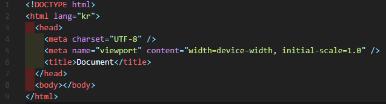
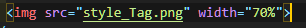
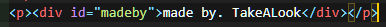
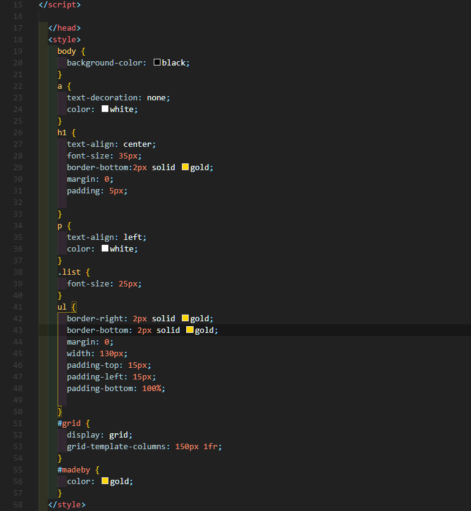
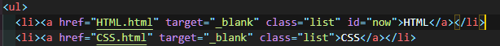
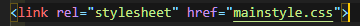
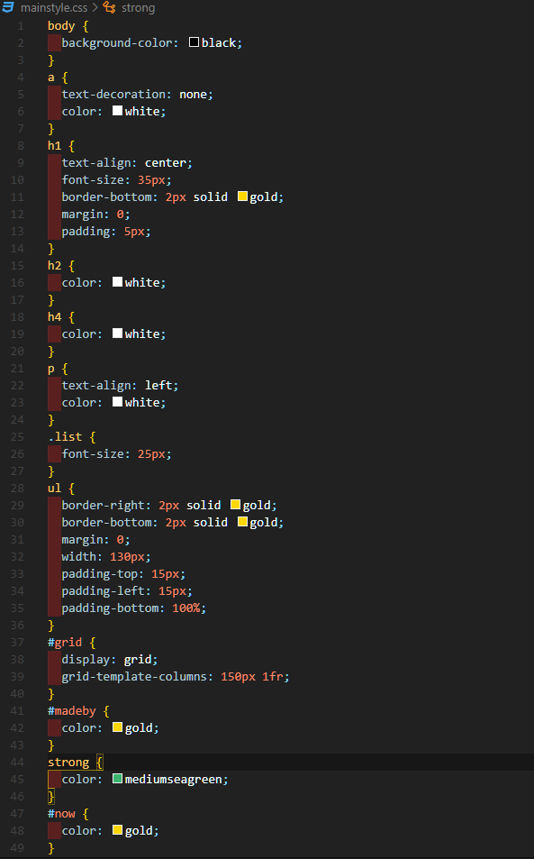

1.HTML의 의미와 구조
HTML은 Hyper Text Markup Language, 즉 컴퓨터의 컴파일이 필요한 언어가 아닌, 마크업 언어이며, WEB을 구성하는 가장 기본적이며 최소한의 언어이다. HTML의 기본적 구조는 Tag라는 것과 그 Tag들의 속성등을 정의하여 사용하고, <>와 < / >로 시작과 끝을 구분한다. 물론, <>만 사용하는 Tag도 있다. 실제로 코딩을 하면 아래의 사진과 같다.
2.HTML의 Tag들
"!DOCTYPE"
DOCTYPE은 관용적으로 쓰이는 Tag로, 이 문서가 HTML문서라는 것을 알려주는 역할을 한다. 없어도 딱히 문제가 없지만, 개발자들 사이의 약속같은 것이니 항상 첫번째 Tag로 쓰자.
"HTML"
모든 Tag의 상위 Tag이며, 문서의 시작과 끝을 맺는 Tag이다. 이 Tag는 <>로 시작해서 < / >로 끝나는 기본적 구조를 가지고 있으니 참고할것.
"Head와 Body"
head와 body는 html의 실질적 내용을 가지게되는 Tag로, 항상 head를 위에 쓴다. 는 WEB의 제목과 같은 서론을 포함하는 Tag이고, body는 모든 내용이 담기게 된다. 예를 들어 사진을 넣는다고 하면, 그것은 body의 안에 들어간다. 이 두개의 Tag도 기본적 구조를 가진다.
"strong과 u 등 스타일 Tag"
strong이나 u같은 Tag는 단순하게 글씨의 굵기나 밑줄치기와 같은 기능을 가지고 있다. HTML에는 수많은 스타일 Tag가 있지만, CSS 때문에 많이 사용하지 않는다. 이 Tag도 기본적 구조를 가진다.
"img Tag"
img는 사진을 첨부하는 Tag로, 특이하게 <>만으로 이루어져있다. 앞으로 이것을 외톨이 구조라고 부를것이다.
매우 많이 쓰는 Tag중 하나이기 때문에 확실하게 알아둘 필요가 있다. 아래의 사진은 이 Page에 사용된 예이다.

"video와 iframe"
video와 iframe은 동영상을 넣을 수 있게하는 Tag로, <>와 < / >로 시작과 끝을 구분하는 기본적 구조를 가졌다. 사용방법은 Tag를 시작하고 그 <>안에 href정보 즉, 동영상의 주소정보를 입력하고 크기와 전체화면 가능여부등을 속성코드로 입력해주면 된다.
video와 iframe의 가장 큰 차이점은 video는 자신이 로컬파일로 가지고있는 영상을 사용하고,
"a"
a는 HTML에서 감히 가장 많이 쓰는 Tag중 하나라고 할 수 있다. 기본적 구조를 가지고 있다. a의 역할은 링크를 걸어주는 것으로 매우 활용성이 높다.
예를 들어 youtube의 영상링크를 걸여서 이동할 수 있고,Page와 Page사이를 링크를 걸어 확장성을 높여줄 수도 있다. 기본적 사용방법은 a의 <>안에 href 정보를 넣어 주는 것으로 사용가능하다.
"ul 과 ol, li"
ul 과 ol은 list의 부모 Tag로, li를 감싸주는 역할을 한다. 차이점은 ul은 그냥 목록이 기호로 표시된다는 것이고, ol은 목록에
숫자를 매겨 표시한다는 것이다. 그리고 li는 그 부모 Tag의 안에서 실질적인 내용을 담당한다. 사용방법은 아래 사진과 같다. 참고로 이 사진은 이 Page의 코드이다.

"p 와 br"
p는 HTML의 내용을 담당하는 Tag이다. 기본적 구조로 되어있으며, <>와 < / >의 사이의 내용을 한 단락으로 인식시켜주는 특징이있다. br은 줄바꿈을 담당하는 Tag이며, 외톨이 구조로 되어있다. 단순히 줄바꿈을 하는 Tag이기에 줄바꿈을 해주고 싶은 곳에 적어주면 사용할 수 있다.
"div와 span"
div와 span은 아무런 기능이 없는 비어있는 Tag로, 독립적으로 사용하는 것이 아닌, CSS와 연계하여 사용한다.
div와 span의 차이는 Tag가 차지하는 공간으로 나눌수있는데, div는 p와 같이 컨탠츠가 존재하는 그 line을 모두 사용한다.
이와 반대로 span은 a와 같이 딱 그 Tag가 차지하는 공간만 사용한다. 하지만 inline이나 block과 같이 속성을 부여하면 바꿀 수 있다.
아래의 사진은 div Tag를 실제로 이용한 예이다.

"style"
style은 div나 span과 같이 CSS와 연계하여 사용하는 Tag로, 주로 디자인 적인 요소를 정의하는 공간으로 사용한다.
구체적인 사용방법은 디자인을 변경하고 싶은 Tag를 지정한 후 { }를 열어 속성을 적어주면 해당 HTML문서에 존재하는
모든 같은 코드들이 일괄적으로 변경된다. 아래의 사진은 이 Page의 style Tag이다.

"class와 id"
class와 id는 개별적인 의미를 가지는 Tag가 아닌 Tag들의 카테고리를 지정해주는 Tag의 속성 요소이다. 하지만, class와 id 사이에는 적용순서가 있다. class가 포괄적으로 속성을 지정하는 느낌이라면, id는 매우 구체적으로 속성을 지정하는 요소인 것이다.
예를들어, "list"라는 class가 있고 "listNow"라는 id가 있다고 하자. 이런 상황에 style Tag로 해당 class와 id에 속한 Tag들의 속성을
일괄적으로 변경한다 했을 때에 우선 class가 먼저 1차적으로 적용되고 id가 그 후발주자로 적용되어 결국은 최종적으로 id의 속성이 적용되는 것이다.
그리고, id는 여러개의 Tag에 동일한 이름으로 중복할 수 없다는 특징이 있다. 구체적 사용방법은 <>부분에 class 또는 id =""으로 사용하면 된다.
밑의 사진은 이 Page의 실제 코드이다.

"link"
link는 HTML과 CSS의 연걸용 Tag이다. HTML 문서안에 Tag들이 많아질수록, 트레킹이 높아지는데, 이것을 쉬운말로하면 서버의 이용율이 높아진다는 것이다. 트레킹이 높아지면, 웹의 운영자는 서버이용에 대한 요금이 증가하고, 서버관리가 힘들어진다. 이러한 것을 해소하기 위한 개념이 캐쉬와 link이다.
우선 캐쉬란, 컴퓨터가 해당 웹의 정보를 임시로 다운로드해서 저장하는 것이다. 따라서 처음 접속할 때는 트레킹이 높아지지만, 다시 접속할때는 저장된 캐쉬를 이용하여
빠르게 불러오면서 트레킹도 낮추는 매우 효과적인 기술이다. 그리고 이 link Tag가 캐쉬 기술의 실현을 위한 Tag라고 할 수 있다.
구체적인 이용 방법은 CSS의 내용을 담을 CSS 문서를 만들어 HTML에 style Tag를 이용하지 않고 속성을 정의한 파일로 연결해주는 것이다. 이 사이트에서
실제로 사용한 예를 사진으로 보자면 다음과 같다.


이렇듯 link Tag로 HTML 문서에 CSS 문서를 지정하여 이용하는 것이다.